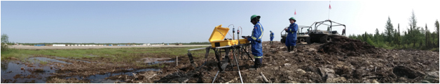

@@include('header.html', {
  "level": "third"
})

@@include('section-tabs.html', {
  "level": "third"
})

<div class='section main_content'>
  <div class="content">

    <section class="single-article">

      <ul class="breadcrumbs">
        <li><a href="../../table-of-contents.php">Contents</a><div class="breadcrumbs-arrow">&rsaquo;</div></li>
        <li>04 CoalBedMethane BGG</li>
      </ul><!-- /.single-article__breadcrumb -->

      <div class="first-page">
        <h2 class="first-page__title">Coal Bed Methane</h2>
        
      </div><!-- /.first-page -->

      <div class="table-of-contents">
        <div class="single-chapter">
          <h3 class="single-chapter__title">04 CoalBedMethane BGG</h3>
          <ul class="single-chapter__links">
            <li><a href="http://localhost:8888/adrok/together-we-rock-vol-1/04-coalbedmethane/coalbedmethane-1.php">4.1 Resolving thin coal beds using ADR Poster</a></li>
            <li><a href="http://localhost:8888/adrok/together-we-rock-vol-1/04-coalbedmethane/coalbedmethane-2.php">4.2 Case Studies 2012</a></li>
          </ul><!-- /.single-chapter__links -->
        </div><!-- /.single-chapter -->
      </div><!-- /.table-of-contents -->

      <div class="first-page">
        
      </div><!-- /.first-page -->


    </section><!-- /.single-article -->


    </div>
  </div>

@@include('footer.html')
